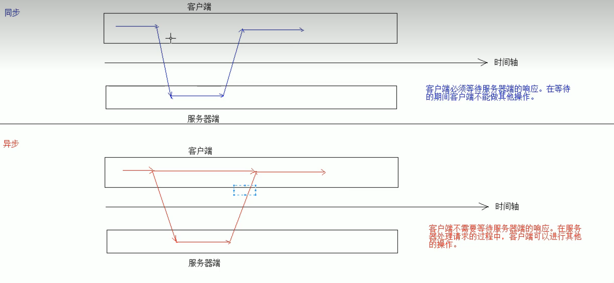

# AJAX
1. 概念： ASynchronous JavaScript And XML 异步的JavaScript 和 XML
1. 异步和同步：客户端和服务器端相互通信的基础上
* 客户端必须等待服务器端的响应。在等待的期间客户端不能做其他操作。
* 客户端不需要等待服务器端的响应。在服务器处理请求的过程中，客户端可以进行其他的操作。
Ajax 是一种在无需重新加载整个网页的情况下，能够更新部分网页的技术。 [1]
通过在后台与服务器进行少量数据交换，Ajax 可以使网页实现异步更新。这意味着可以在不重新加载整个网页的情况下，对网页的某部分进行更新。
传统的网页（不使用 Ajax）如果需要更新内容，必须重载整个网页页面。
提升用户的体验
2. 实现方式：
1. 原生的JS实现方式（了解）
//1.创建核心对象
var xmlhttp;
if (window.XMLHttpRequest)
{// code for IE7+, Firefox, Chrome, Opera, Safari
xmlhttp=new XMLHttpRequest();
}
else
{// code for IE6, IE5
xmlhttp=new ActiveXObject("Microsoft.XMLHTTP");
}
//2. 建立连接
/* 参数：
1. 请求方式：GET、POST
* get方式，请求参数在URL后边拼接。send方法为空参
* post方式，请求参数在send方法中定义
2. 请求的URL：
3. 同步或异步请求：true（异步）或 false（同步）*/
xmlhttp.open("GET","ajaxServlet?username=tom",true);
//3.发送请求
xmlhttp.send();
//4.接受并处理来自服务器的响应结果
//获取方式 ：xmlhttp.responseText
//什么时候获取？当服务器响应成功后再获取
//当xmlhttp对象的就绪状态改变时，触发事件onreadystatechange。
xmlhttp.onreadystatechange=function()
{
//判断readyState就绪状态是否为4，判断status响应状态码是否为200
if (xmlhttp.readyState==4 && xmlhttp.status==200)
{
//获取服务器的响应结果
var responseText = xmlhttp.responseText;
alert(responseText);
}
}
2. JQeury实现方式
1. $.ajax()
* 语法：$.ajax({键值对});
//使用$.ajax()发送异步请求
$.ajax({
url:"ajaxServlet1111" , // 请求路径
type:"POST" , //请求方式,默认get
//data: "username=jack&age=23",//请求参数
data:{"username":"jack","age":23},
success:function (data) {
alert(data);
},//响应成功后的回调函数
error:function () {
alert("出错啦...")
},//表示如果请求响应出现错误，会执行的回调函数
dataType:"text"//设置接受到的响应数据的格式
});
2. $.get()：发送get请求
* 语法：$.get(url, [data], [callback], [type])
* 参数：
* url：请求路径
* data：请求参数
* callback：回调函数
* type：响应结果的类型
3. $.post()：发送post请求
* 语法：$.post(url, [data], [callback], [type])
* 参数：
* url：请求路径
* data：请求参数
* callback：回调函数
* type：响应结果的类型

# JSON
1. 概念： JavaScript Object Notation JavaScript对象表示法
Person p = new Person();
p.setName("张三");
p.setAge(23);
p.setGender("男");
var p = {"name":"张三","age":23,"gender":"男"};
* json现在多用于存储和交换文本信息的语法
* 进行数据的传输
* JSON 比 XML 更小、更快，更易解析。
2. 语法：
1. 基本规则
* 数据在名称/值对中：json数据是由键值对构成的
* 键用引号(单双都行)引起来，也可以不使用引号
* 值得取值类型：
1. 数字（整数或浮点数）
2. 字符串（在双引号中）
3. 逻辑值（true 或 false）
4. 数组（在方括号中） {"persons":[{},{}]}
5. 对象（在花括号中） {"address":{"province"："陕西"....}}
6. null
* 数据由逗号分隔：多个键值对由逗号分隔
* 花括号保存对象：使用{}定义json 格式
* 方括号保存数组：[]
2. 获取数据:
1. json对象.键名
2. json对象["键名"]
3. 数组对象[索引]
4. 遍历
//1.定义基本格式
var person = {"name": "张三", age: 23, 'gender': true};
var ps = [{"name": "张三", "age": 23, "gender": true},
{"name": "李四", "age": 24, "gender": true},
{"name": "王五", "age": 25, "gender": false}];
//获取person对象中所有的键和值
//for in 循环
/* for(var key in person){
//这样的方式获取不行。因为相当于 person."name"
//alert(key + ":" + person.key);
alert(key+":"+person[key]);
}*/
//获取ps中的所有值
for (var i = 0; i < ps.length; i++) {
var p = ps[i];
for(var key in p){
alert(key+":"+p[key]);
}
}
3. JSON数据和Java对象的相互转换
* JSON解析器：
* 常见的解析器：Jsonlib，Gson，fastjson，jackson
1. JSON转为Java对象
1. 导入jackson的相关jar包
2. 创建Jackson核心对象 ObjectMapper
3. 调用ObjectMapper的相关方法进行转换
1. readValue(json字符串数据,Class)
2. Java对象转换JSON
1. 使用步骤：
1. 导入jackson的相关jar包
2. 创建Jackson核心对象 ObjectMapper
3. 调用ObjectMapper的相关方法进行转换
1. 转换方法：
* writeValue(参数1，obj):
参数1：
File：将obj对象转换为JSON字符串，并保存到指定的文件中
Writer：将obj对象转换为JSON字符串，并将json数据填充到字符输出流中
OutputStream：将obj对象转换为JSON字符串，并将json数据填充到字节输出流中
* writeValueAsString(obj):将对象转为json字符串
2. 注解：
1. @JsonIgnore：排除属性。
2. @JsonFormat：属性值得格式化
* @JsonFormat(pattern = "yyyy-MM-dd")
3. 复杂java对象转换
1. List：数组
2. Map：对象格式一致
# 案例：
* 校验用户名是否存在
1. 服务器响应的数据，在客户端使用时，要想当做json数据格式使用。有两种解决方案：
1. $.get(type):将最后一个参数type指定为"json"
2. 在服务器端设置MIME类型
response.setContentType("application/json;charset=utf-8");